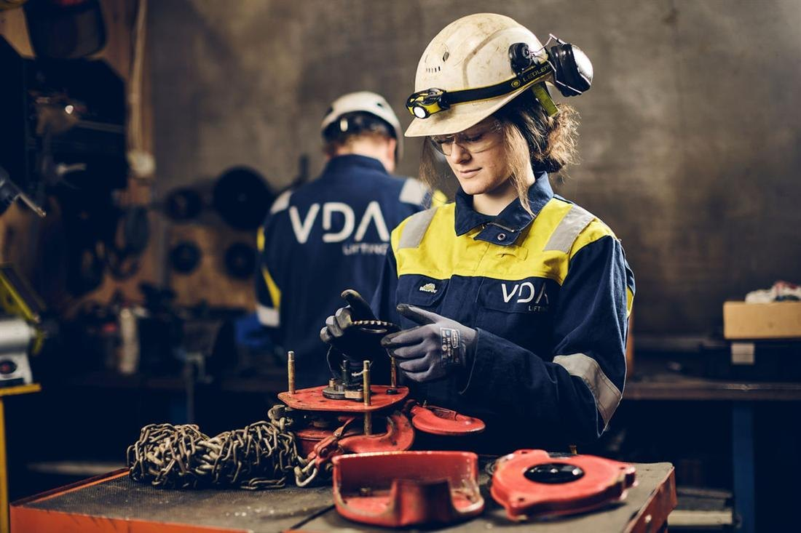

Helse, klinikk & behandling · Tønsberg
Markedsomrader
«Hvis vi skal lykkes med både fornybar energi og industriell verdiskaping, må vi eie mer av den kritiske kompetansen selv», sier konsernsjef Kay Ove Johansen.
Hos CNP – Senter for Nødmedisin og Prehospitale Tjenester får du faglig rådgivning, forutsigbare rammer og løsninger tilpasset ditt behov i Tønsberg.
Grundig kartlegging og faglig vurdering i rolige omgivelser, der vi setter av god tid til å forstå dine behov og mål.
Evidensbasert og individuelt tilpasset behandling, rehabilitering eller teknisk produksjon utført med stor nøyaktighet.
